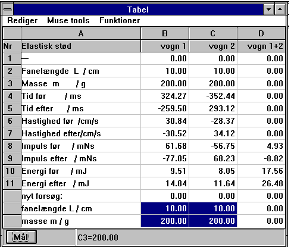

Ved elastisk eller uelastisk stød benyttes tabellen i Datalyse:

Der er allerede lavet et forsøg. Bemærk teksten nyt forsøg i celle A12.
Bemærk, at celleområdet [B13: C14] er markeret. Indtast nye værdier for fanelængde og masser.. Klik på knappen »Mål«. Afvent data fra tælleren.
Når data er modtaget markeres [Bxx:Cxx]. Nu indtastes de nye værdier i dette område.
Bemærk, at man kan lave et forsøg om! Man anbringer blot cursoren i det rette celleområde og klikker på »Mål«.
Tælleren skal vise 2+2 i displayet, ellers er målingerne ikke korrekte!
For MC24 og MC24E skal man huske at stoppe vognene med hånden, ellers sendes uønskede data til pc'en.
Forsøgsopstillinger:
Elastisk stød: vogn 1 --> Fotocelle Fotocelle <-- vogn 2.
Uelastisk stød: vogn 1 --> Fotocelle vogn 2 Fotocelle